A história gira em torno de um ser que foi chamado de A Entidade. A criatura nunca foi vista, mas tem um poder muito forte. Ela pode invocar uma nevoa que traz seres de dimensões e tempos diferentes para o seu próprio universo particular. Dentro desse lugar pode manipular a própria realidade e ter um domínio de quase tudo.
⠀De acordo com as informações, foi criada a partir da própria maldade que existe no mundo. Quanto mais ela aumenta seu poder no seu próprio reino, ela tem mais acesso e influencia no mundo real. Ela se alimenta absorvendo emoções fortes, e como essa é uma entidade maligna ela descobriu um sistema muito eficaz para produzir essas emoções.
⠀Primeiro ela junta seu primeiro grupo de vítimas, o das criaturas corrompidas. Além de criaturas que já são caçadores a entidade também consegue criar os seus próprios monstros originais. Ela pode sentir no mundo real pessoas que passaram por uma grande tragedia e tem um potencial a se tornar bons caçadores então de certa forma ela pode moldar esses humanos transformando-os em monstros.
⠀A entidade oferece para os monstros vítimas e todas a satisfação da caça, mas existem regras que eles precisam obedecer. Não podem matar a vítima diretamente eles só podem ferir elas e colocá-las no gancho que alimenta a entidade. Eles só vão poder matar uma vítima diretamente em situações bem especificas normalmente eles precisam dar uma oferenda para a entidade que permitirá a matança.
⠀ O segundo grupo de vítimas são os dos seres não corrompidos, os sobreviventes. Pessoas normais que infelizmente acabaram entrando nas áreas de influência da entidade, que seriam áreas que aconteceram grandes tragedias. Pessoas que passam por ela, são transportadas para sua dimensão
⠀ Quando os sobreviventes são transportados para o reino da entidade, acordam em um acampamento. Esse acampamento é como uma base, é o lugar onde estão seguros e tem paz por um tempo enquanto esperam uma partida do jogo começar.
Na gameplay do jogo os sobreviventes tem que evitar os monstros e fazer missões pelo mapa como concertar geradores de energia que vão abrir os portões para um lugar seguro. Os monstros tem que capturar os sobreviventes e colocá-los no gancho do sacrifício.
⠀Nesse jogo você pode escolher entre jogar como assassino ou como sobrevivente. Cada um com sua habilidade especifica para deixar a gameplay única.
⠀No jogo também a o sistema de skins. Skin in the game pode ser traduzida, de forma literal como “pele em jogo”, você pode compra-las e colocar em seus personagens como se fosse uma roupa para eles.
Assassinos
| 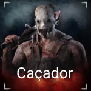 | 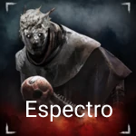 | 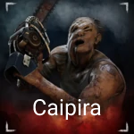 |
| 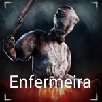 | 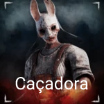 | 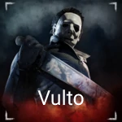 |
| 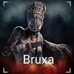 | 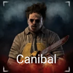 | 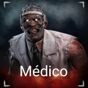 |
| 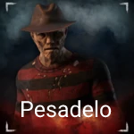 | 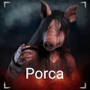 | 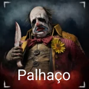 |
| 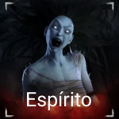 | 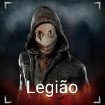 | 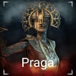 |
| 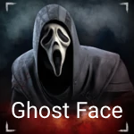 | 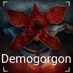 | 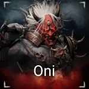 |
| 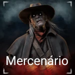 | 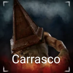 | 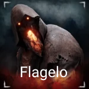 |
| 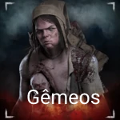 | 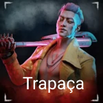 | 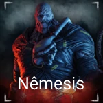 |
| 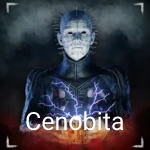 | 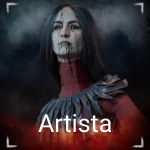 | 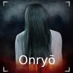 |
⠀Como existem muitos sobreviventes, resolvi citar somente alguns. Também é possível adquirir skins para eles, e como os assassinos cada um tem sua habilidade específicas.
Sobreviventes
 |
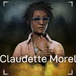 |  |
 |
 |
 |
 |
 |
 |

⠀Quando personagens de franquias diferentes se encontram nos jogos e em outras mídias, chamamos isso de um crossover. No Dead by Daylight existem muitos crossovers como por exemplo o do filme Pânico.
⠀Este crossover foi discutido entre os fãs, pois nunca houve uma indicação clara de que Scream foi introduzido como parte do jogo. Mas no 12º capítulo do jogo, Ghost Face foi trazido como um personagem assassino. No entanto, nada mais o acompanhava, nenhum mapa novo ou sobreviventes novos. Era simplesmente Ghost Face sendo Ghost Face.


⠀ Existem outros crossovers no jogo tanto de Assassinos quanto de Sobreviventes além desse, como o de Stranger Things Com esse crossover foram adicionados dois sobrevivente (Steve Harrington e Nancy Wheeler), um assassino (Demogorgon) e um mapa novo.
⠀ O jogo foi dirigido por Ashley Pannell, Dave Richard e Mathieu Coté. As publicadoras fora Behaviour Interactive, Starbreeze Studios (2016–2018), 505 Games (Nintendo Switch), Deep Silver (cópias físicas de PlayStation 5 e Xbox Series X/S), sendo Behaviour Interactive o criador do jogo. O produtor musical do jogo, Michel F. April, fez todas as trilhas sonoras do jogo, menos as musicas dos crossovers que já existiam.
⠀ As músicas no jogo são muito presentes, todos os personagens são dublados e cada Assassino tem sua trilha sonora.
Algumas das trilhas sonoras que não foram criadas são:
⠀ Pyramid Head theme, Michael Myers theme, Freddy Krueger theme e Demongorgon theme.

⠀ A palavra engine em inglês significa motor, mas não pense em combustão. As engines dos jogos são sistemas totalmente integrados, onde é modelada a I.A, a jogabilidade e movimentação espacial, os personagens e ambientes, já contando com a parte gráfica.

⠀ Os responsáveis pelas programações foram: Fadi BeyroutiJean-Philip e Desjardins e Rémi Veilleux. E para programar o jogo foi ultilizado o Unreal Engine, que é um motor de jogo desenvolvido pela Epic Games.
Usado pela primeira vez em 1998 no jogo de tiro em primeira pessoa Unreal, ele tem sido a base de muitos jogos desde então. Embora usado inicialmente para jogos de tiro em primeira pessoa, ele tem sido usado com sucesso em uma grande variedade de gêneros de jogos.
⠀ Seu núcleo é escrito em C++, possibilitando a portabilidade. Suporta múltiplas plataformas, incluindo Microsoft Windows, Linux, Mac OS e Mac OS X em computadores pessoais, e os consoles Dreamcast, GameCube, Nintendo Switch, PlayStation 2, PlayStation 3, PlayStation 4, PlayStation 5, Stadia, Wii, Wii U, Xbox, Xbox 360, Xbox One e Xbox Series X.
⠀ Além dos programadores, temos que sitar também os artistas Filip Ivanovic e Marc Salha que são responsáveis por todas as artes do jogo.
⠀ Agora teremos algumas pessoas jogando Dead by Daylight. O jogo é transmitido em plataformas como o YouTube e Twitch.
⠀Trailers oficiais do jogo:
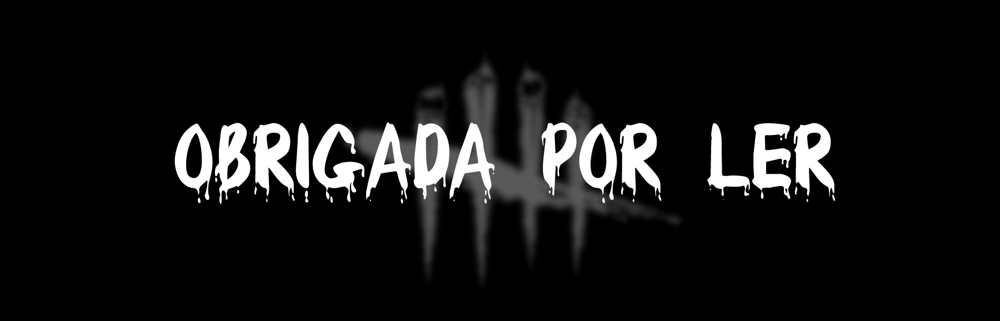